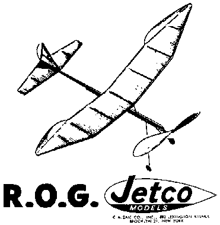

|

The featured model for the first FFML postal contest, the Jetco ROG is a classic design from the golden age of model aviation. It flies like a dream indoors or out in calm air. Quick and easy to build, it requires just a few scraps of wood, and a few minutes of your time.
To download a zipped plan, click here |
Copyright 1998, Thayer Syme. All rights reserved
Last modified April 15, 1998